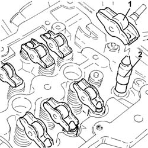

1036H57 hydraulic tappets all r r
- Path
- Procedures > 10 ENGINE UNIT > 1036 TIMING SYSTEM > 1036H tappets and rocker shafts > 1036H57 hydraulic tappets all r r
- Kind
- repair procedure (removal / refitting; the operation number is the code)
- Applies to
- engines: 1.3 JTD 16v; all production periods
- Interactive page
- https://sloeber94.github.io/elrnDB-fPnd/en/#/2752575
Applies to: engines: 1.3 JTD 16v; all production periods
 Removing
Removing
 Refitting
Refitting0010T84 coolant for air conditioning system dehydrate and recharge
5530B52 Battery DRIP TRAY/SUPPORT - R.R.
1060G90 diesel injection wiring harness - r r
1092G11 Engine components single drive BELT - R.R. for versions with air conditioning
1092A12 crankshaft pulley - r+r for versions with air conditioner
1088B10 engine cooling tank - r + r
1016B10 single cylinder head extension - change gasket
1. Remove the valve rocker arms.
2. Remove the hydraulic tappets.

Applies to: engines: 1.3 JTD 16v; all production periods
Refitting
RemovingLubricate with engine oil and refit the hydraulic tappets in their seatings.
Place the valve rocker arms back in their housings.
1016B10 single cylinder head extension - change gasket
1088B10 engine cooling tank - r + r
1092A12 crankshaft pulley - r+r for versions with air conditioner
1092G11 Engine components single drive BELT - R.R. for versions with air conditioning
1060G90 diesel injection wiring harness - r r
5530B52 Battery DRIP TRAY/SUPPORT - R.R.
0010T84 coolant for air conditioning system dehydrate and recharge
0010T21 coolant check density and top up if necessary
Remove the car from the ramps.
Topics linked from this page (10)
- 0010T21 coolant check density and top up if necessary
- 0010T84 coolant for air conditioning system dehydrate and recharge
- 1016B10 single cylinder head extension - change gasket
- 1060G90 diesel injection wiring harness - r r
- 1088B10 engine cooling tank - r + r
- 1092A12 crankshaft pulley - r+r for versions with air conditioner
- 1092G11 Engine components single drive BELT - R.R. for versions with air conditioning
- 4450B04 right front wheel r r
- 5530B10 battery - r+r
- 5530B52 Battery DRIP TRAY/SUPPORT - R.R.